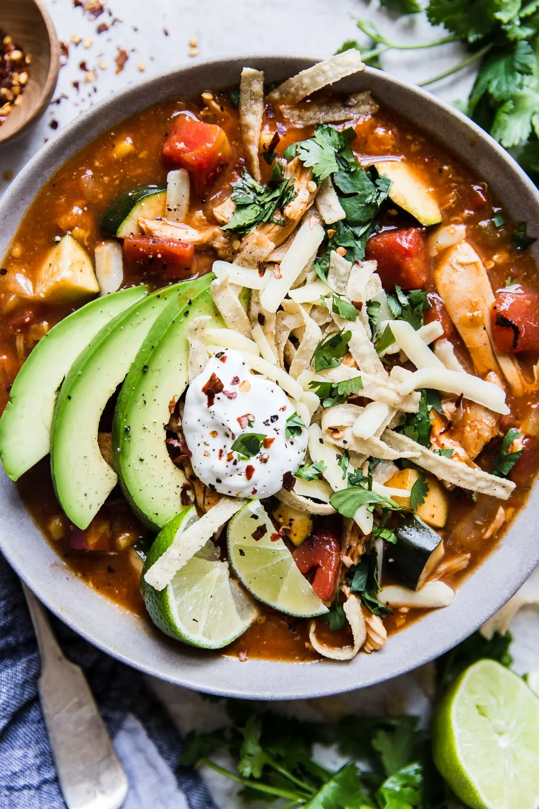

Tortilla Soup

Warmly spiced and satisfying
Ingredients
- 1 rotisserie chicken or 4 cups poached chicken
- 15 oz fire roasted tomatoes, diced
- 10 oz enchilade sauce
- 1 onion, chopped
- 1 zucchini, sliced into 1/4 inch half circles
- 4 oz green chilies
- 4 cloves garlic, minced
- 4 cups chicken broth
- 14 oz can of creamed corn (undrained) or sweet corn (drained)
- 1 tsp ground cumin
- 1 tsp chili powder
- 1 tsp sea salt
- 1/4 tsp ground black pepper
- 3 bay leaves
Garnish
- 4 tbsp chopped cilantro
- 1 lime, cut into wedges
- Sour cream
- Cheese of preference, shredded
- 1 avocado, sliced
- Tortilla chips
Instructions
- While rotisserie chicken is still warm, pick all meat of the bones, discard skin. Place the chicken meat in a large stock pot. Discard bones, or save if you like to make homemade stock.
- Add to the pot the tomatoes, enchilada sauce, chicken broth, onion, zucchini, chilis, garlic, corn, cumin, chili powder, salt, pepper and bay leaves. Stir to combine and turn the heat to high.
- As soon as soup begins to boil, turn the heat to medium-low heat and continue to cook, uncovered, until the onions are translucent and zucchini is tender, about 30 minutes.
- Serve the soup topped with chopped cilantro, a squeeze of fresh lime juice, sour cream, cheese, avocado and corn chips.
Enjoy!